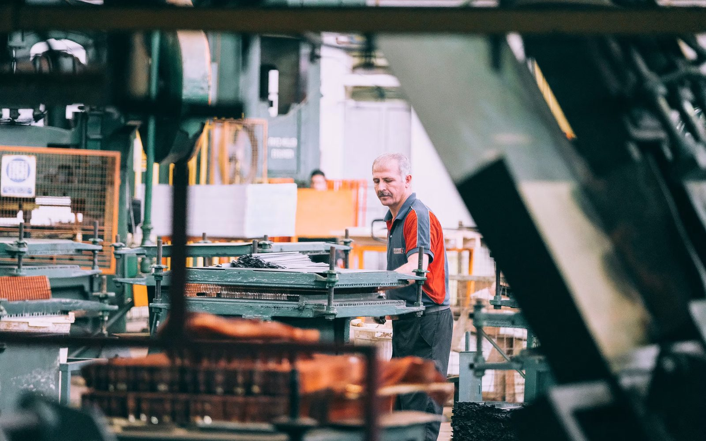

Custom Safety Plans
A complete program written around your North Shore operation — yard, set, slope, or shop — sized for lean teams and inspection-ready.
Learn MoreThe North Shore builds ships, shoots films, and constructs homes on some of the steepest buildable terrain in Canada. Alcantara Safety Solutions delivers WorkSafeBC-aligned safety plans, compliance reviews, and risk assessments for North Vancouver and West Vancouver employers — on-site, fixed-fee, and written for the North Shore's distinctive hazards.
The North Shore's economy is compact but unusually consequential. North Vancouver's waterfront carries a century of shipbuilding heritage into the present: Seaspan's operations have grown past 1,200 employees under the National Shipbuilding Strategy, delivering vessels for the Canadian Coast Guard and Navy while the drydock facility runs more than fifty repair and maintenance projects a year for customers including BC Ferries and the Coast Guard. Around that marine core sits a diversified economy — film and digital media (a sector that has posted triple-digit job growth on the Shore), construction and trades, recreation and tourism anchored by the mountains, and a business community that is overwhelmingly small: nearly 98 percent of North Vancouver businesses employ 49 people or fewer.
West Vancouver adds its own profile: high-end residential construction and renovation on steep view lots, significant property management and estate maintenance operations, and municipal-scale parks and public works. What unites both municipalities is terrain and water. Slope defines North Shore construction — access, anchorage, drainage, and material handling all get harder when the site tilts. The waterfront defines North Shore industry — work over water, vessel environments, confined spaces in hulls and tanks, and marine weather.
Alcantara Safety Solutions serves employers across both municipalities: shipyard and marine contractors, film production trades, builders and renovators, recreation and tourism operators, property managers, and the hundreds of small businesses that make up the Shore's commercial backbone. Programs are written from scratch, on-site, at a fixed fee — sized for the reality that most North Shore employers run lean teams wearing several hats at once.

The North Shore waterfront is one of Canada's most important marine industrial centres, and its compliance environment matches its scale. Shipyard and vessel work concentrates nearly every high-hazard category in the OHS Regulation: confined space entry in hulls, tanks, and voids; hot work with fire watch and atmospheric testing; work over water with rescue and PFD requirements; heavy lift and rigging; scaffolding and staging over complex geometries; and multi-employer coordination among owner, yard, and dozens of specialty subcontractors. We write marine-industry programs and subcontractor packages that meet the documentation standards of the yards and vessel owners — because on this waterfront, your safety package is reviewed before your price.
The North Shore punches far above its weight in film — support occupations in motion picture and production grew more than 240 percent in recent years, and the Shore's studios, locations, and specialist trades serve productions across Hollywood North. Production-adjacent employers face the sector's characteristic compliance churn: crews assembled quickly, temporary structures and locations, night and weather work, and traffic control around public spaces. We help North Shore production trades keep orientations, hazard assessments, and supervision documentation current between engagements — so the next production's paperwork is a formality, not a scramble.
Building on the North Shore means building on grades that would be retaining walls anywhere else. Slope multiplies every construction hazard: fall protection becomes more complex and more critical, excavations behave differently, material delivery and staging need real planning, and weather — the Shore gets roughly double the rain of the airport — degrades footing and access constantly. Add West Vancouver's high-end renovation market, where crews work inside occupied multi-million-dollar homes, and you get a compliance profile generic programs cannot cover. We write site-specific plans that treat slope, weather, and occupancy as the design constraints they are.
Grouse, the Capilano Suspension Bridge, the Seymour and Fromme trail networks, and the Lower Lonsdale waterfront draw visitors year-round, and the operators serving them face distinctive obligations: public safety interwoven with worker safety, lift and mechanical systems, food service, seasonal and young workers, and emergency response in terrain where help is not instantly available. We build recreation and hospitality programs that cover both audiences — your guests and your crew — with procedures your seasonal supervisors can actually run.
Nearly 98 percent of North Shore businesses employ 49 people or fewer — and small employers carry the same fundamental WorkSafeBC duties as large ones: orientation, safe work procedures, bullying and harassment policies, first aid coverage, and incident reporting. Property managers and estate maintenance operations add their own profile: contractor coordination, roof and ladder work, mechanical room hazards, and swimming pool and amenity maintenance. We build right-sized programs for small North Shore employers: everything the Regulation requires, proportionate to a lean team, and maintainable without a safety department.
North Shore employers answer to the same OHS Regulation as the rest of B.C., but the local industry mix shapes the enforcement picture. Marine and shipyard work draws WorkSafeBC's most demanding inspection categories — confined space, hot work, and multi-employer coordination — and the yards' own safety departments add a private enforcement layer on top. In construction, fall protection and prime contractor documentation lead the citation lists, exactly as they do across the region — complicated here by terrain that makes both harder.
Two North Shore realities deserve emphasis. First, work over and around water: any marine-adjacent operation needs documented procedures for drowning prevention, rescue, and PFD use, and WorkSafeBC treats these as fundamental, not optional. Second, small employer coverage: with nearly 98 percent of local businesses under 50 employees, the Shore is full of employers who assume they are too small to need documentation. The Regulation disagrees — orientation, procedures, and incident reporting apply from the first employee. Our small-business programs close that gap without burying a five-person company in paperwork.
Every engagement starts with your operation, not a template. These are the services North Shore employers ask for most:
A complete program written around your North Shore operation — yard, set, slope, or shop — sized for lean teams and inspection-ready.
Learn More
Assessments built for North Shore realities: confined spaces, work over water, steep-slope construction, and multi-employer sites.
Learn More
A gap review of your documentation against the OHS Regulation and the pre-qualification standards of the yards, productions, and primes you work for.
Learn MoreThe North Shore is in our core on-site service area, and we cover both municipalities — the waterfront and Lonsdale corridors, the Capilano and Seymour industrial areas, and the residential hillsides of North and West Vancouver alike. Terrain and water shape everything about how work happens here, so we walk every site before we write a word.
Engagements run on a fixed fee quoted before we start: discovery and walkthrough, draft program in about two weeks, a working session with your supervisors, then final documents and a plain-language briefing. When a yard reviews your subcontractor package, a production asks for your documentation, or WorkSafeBC comes to your site, the paperwork is already done.
Ready when you are: call (778) 954-1988 or book a free consultation — or use the instant estimate for a fixed quote in minutes.
Yes — marine-industry subcontracting is a North Shore specialty. We write the programs and pre-qualification documentation that yards and vessel owners require: confined space, hot work, work over water, rigging, and multi-employer coordination. Packages are built to pass prime contractor review on first submission, because on the waterfront, your safety documentation is reviewed before your price is.
The core obligations — orientation, safe work procedures for your hazards, supervision, first aid coverage, bullying and harassment policy, and incident reporting — apply from your first employee. A formal written program becomes mandatory at 20 workers, but most North Shore small employers need written documentation sooner in practice, because the yards, productions, property managers, and municipalities they work for require it contractually. We build proportionate programs: fully compliant, sized for lean teams.
Everything the Regulation requires — fall protection, excavation, access, material handling — becomes more complex and more critical on grade. Anchorage options narrow, weather degrades footing faster (the North Shore gets roughly double the rainfall of the airport), and rescue planning changes when a site tilts. Generic fall protection plans written for flat sites fail on North Shore lots. We write slope-specific procedures based on your actual sites.
Yes. Productions, property managers, and strata corporations across the North Shore routinely require contractor safety documentation before work starts. We prepare the package — program summary, procedures for the work at hand, insurance and WorkSafeBC clearances, orientation records — formatted the way these gatekeepers expect, so approval is a formality.
For a single North Shore operation, a complete custom program is typically ready within two to three weeks of our walkthrough, including revisions. Production timelines, yard mobilizations, and bid deadlines can usually be accommodated — tell us the date you are working toward and we will plan backward from it.
Also serving: Vancouver · Burnaby · Coquitlam · Richmond · All 16 Service Areas
Industries we serve: Construction · Civil & Infrastructure · Warehousing · All Industries
Book a free consultation — we will identify exactly which WorkSafeBC requirements apply to your operation and quote a fixed fee before we start.
Book Your Free Call